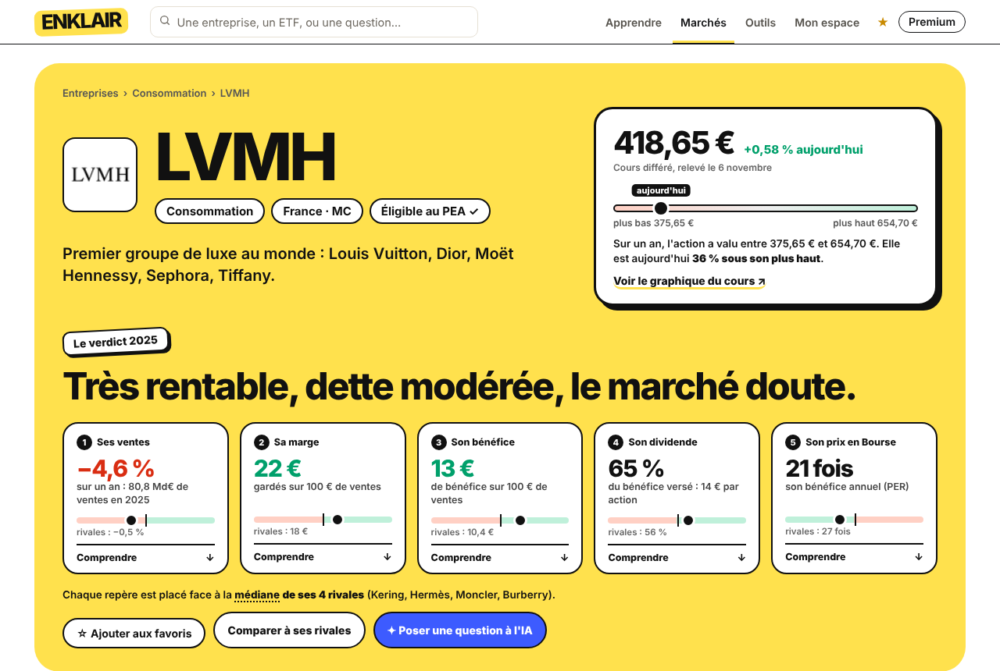
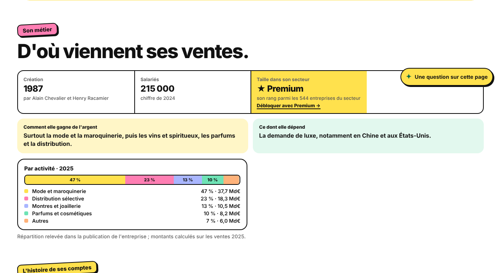

1. Fiche ouverte en gratuit (3e fiche du jour) : tout est visible, un compteur discret

Fiche gratuite 3 / 5 aujourd'hui2. 6e fiche du jour : l'en-tête et les 5 repères restent ouverts, la suite est réservée

La suite de la fiche de LVMH est réservée aux abonnés Premium :
39 € pour un an (3,25 € par mois) ou 4,90 € par mois, sans engagement. Les fiches que vous suivez en favori restent toujours ouvertes.
3. Ce qui change dans « Gratuit / Premium »
| Fonction | Gratuit | Premium |
|---|---|---|
| Fiches entreprises complètes | 5 par jour avant : illimité en-tête et 5 repères toujours ouverts | Illimité |
| Comparer | 3 par semaine avant : 5 | Illimité |
| IA du site | 3 questions par semaine avant : 5 | 30 par jour |
| Rang dans le secteur, classements | Non | Oui |
| Rapport du samedi, alertes de chute par e-mail | Non | Oui |
| Radiographie du portefeuille, export CSV | Non | Oui |
| Actualité, agenda, outils, Apprendre, portefeuille | Oui | Oui |
Pourquoi garder l'en-tête et les 5 repères ouverts : un lien partagé sur les réseaux ne tombe jamais sur une page vide, et Google continue de lire les fiches (c'est par lui que les visiteurs arrivent). Les favoris restent ouverts pour que le portefeuille et les alertes gardent leur sens.